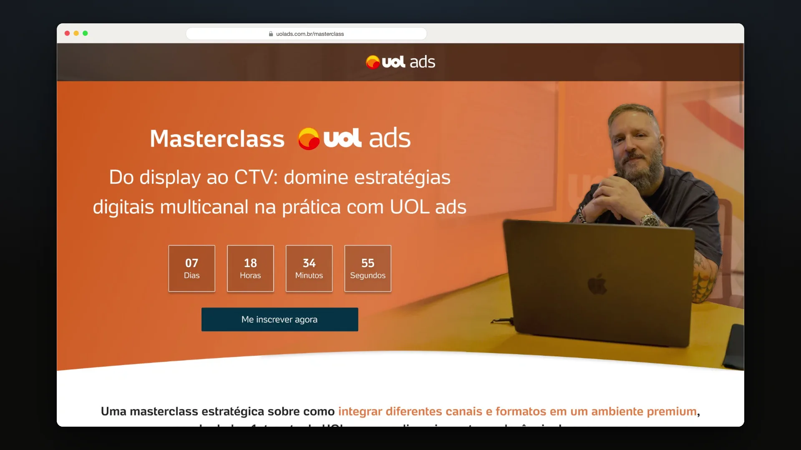

prova
real
real
Chega Junto
Do entendimento e da pesquisa ao branding, à produtificação do app e aos vídeos promocionais. Ponta a ponta, com o time por perto.
abrir case →01 · portfólio
Transformo problemas confusos em produtos claros, da pesquisa e da estratégia à direção de arte e à interface final.
o esboço é parte da entrega
02 · manifesto
Acredito fielmente que é escutando que se aprende. Chego com curiosidade, sem pressa de ter certeza, e conecto o que descubro com a prática.
Feedback é matéria-prima, não veredito: itero o produto, a interface e o processo até a versão imaginada virar real.
03 · trabalhos
A versão anterior fica visível atrás da atual. Passe o cursor para ver de onde cada projeto veio.
Do entendimento e da pesquisa ao branding, à produtificação do app e aos vídeos promocionais. Ponta a ponta, com o time por perto.
abrir case →Direção de arte e produção das peças do produto, construindo o estilo da marca enquanto ela já roda.
abrir case →
Campanha do conceito visual ao ecossistema de peças: benchmark, arquitetura da página, landing page, e-mail, posts e apresentação.
abrir case →Sistema de marca para consultoria de impacto socioambiental, do debrief ao manual de aplicação.
abrir case →04 · galeria
05 · método
Pergunto antes de afirmar. Feedback documentado junto de quem constrói, não depois da entrega.
Versão sobre versão, com a anterior visível. Medida em ticks, nunca em porcentagem.
Acabamento é parte da identidade: grão, ritmo e detalhe até a última camada.
06 · sobre
Sou Thayla, designer de produto formada em Design pela UTFPR. Estou no UOL ads há dois anos, hoje conduzindo o design de produto de ponta a ponta: da estratégia e da direção de arte de campanha até a interface final.
Trabalho em três frentes ao mesmo tempo: UX/UI, adops e comunicação. É essa circulação entre elas que define meu jeito de projetar: entendo o produto por dentro antes de decidir como ele se comunica por fora.
Meu método é iteração. Feedback documentado, rodada, ajuste, nova rodada. Foi assim que, em menos de um ano imersa no time de produto, participei da construção da nova cara da comunicação do UOL ads, com reconhecimento de times de várias áreas.
idiomas
Leio referência, documentação e pesquisa em inglês todos os dias. É o que me deixa buscar repertório onde ele estiver, e não só onde já está traduzido.
o que eu faço
Elas raramente aparecem separadas: uma pesquisa vira interface, que vira peça, que vira movimento.
marcas que passaram pelas minhas mãos
Coca-Cola, GWM, Quatá e outras, em peças de banner a TV e streaming07 · trajetória
Cada etapa somou uma habilidade que eu ainda uso. Hoje elas trabalham juntas no mesmo projeto.
2021 · onde começou
Empresa júnior da UTFPR. Vendas e marketing, depois direção da área: OKR, times e conteúdo com métrica.
2022 · a primeira tela
UX/UI de sites, dashboards e apps de análise de dados, com equipes multifuncionais. Foi onde UX/UI virou ofício.
2024 · a marca dos outros
Artes para o blog, mantendo a identidade da marca e adequando a estética a cada produto e tema.
2024 · adops
Aprendi a analisar KVs e a diagramar banners passando as informações principais da marca e da campanha.
2025 · hoje
UX/UI, adops e comunicação na mesma mesa, da estratégia e direção de arte à interface final.
08 · contato
continua
vídeo animado